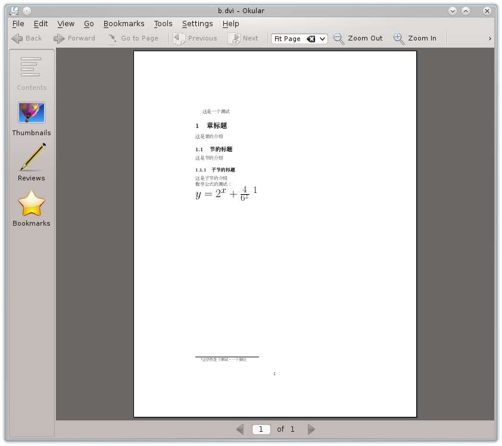

TeX系统简介
TeX系统最早由Stanford大学教授Donald E. Kunth制成的计算机排版软件系统，大家对他的《The Art of Computer Programming》应该不会陌生。
实际上，TeX的制成正是由于上述的书出版样本，令他不满意，所以激发了他创制了TeX排版系统。正所谓：一个确定性的需求比十所大学更能把握前进的方向。
大家可能经常以据如MS Word等这类简单排版的所见即所得的软件，或者在Linux中以LibreOffice中的Word这样的软件，来完成文字排版等操作，但是对于论文，书籍这样的文档，和TeX相比，MS Word这些软件就成了小儿科了。
说了这么多，今天的主题可是在Linux中搭建TeX系统，所以我就不废话了，如有疑惑，可以自己百度。
首先需要准备如下软件包或压缩包：
- texlive 或 tetex
- CJK
- 字体，比如：nsung-tl,nkai-tl （后面的tl应该表示texlive）
下面逐个简单介绍各个包的功能和作用。
1. texlive或tetex
这个包是整个排版系统的主要部分，它是排版系统的核心，texlive和tetex是两个发行版，但是它们实现功能基本相同，大同小异，只要有其中一个即可，下文以texlive为例，当然还有很多实现TeX系统的其他软件。
上述所述的texlive，虽然从理论上说，TeX已经可以完成排版，但是它只包含基本命令，使用起来会非常麻烦，很繁琐，要写更多的代码，这就类似于：在Windows环境里，用纯C写个GUI程序与用MFC写个GUI程序相比较，或者在Linux环境里，用纯C调用xlib的X Windows的API来写GUI程序与调用gtk+或qt(用C++)来写GUI程序。
LaTex同TeX一样，也是texlive的一个组件，Latex主要特色是其自动编号，包括章，节，段落，公式，图表等，这给排版工作带来极大的方便。
2. CJK
原始的LaTex版本是不支持中文这些文字的，它只支持英文，即ASCII字符中小于0x80的字符。为了让LaTex能够支持中文，需要为LaTeX系统添加宏，使得其可以处理中文，而CJK，除了可以处理中文，还可处理日文，韩文，CJK意为Chinese，Japanese，Korean。
3. 字体
仅仅安装了CJK宏包，仍然不能输出中文（编译.tex文件时会输出找不到字体的错误），这些字体中的汉字的标点符号会被当作汉字字体来处理的，不会影响到任何汉字标点符号的表示。字体同宏包一样，以压缩包形式存放。
具体操作步骤
当以上软件包或压缩包都下载好后，首先，安装texlive，使系统具备TeX系统基础环境，如果是首次安装texlive，需要在安装前先安装一个install-tl-unx的包，这个包包含一些Perl脚本，用来设置在安装texlive之前的基本环境条件。
基本的TeX环境制好后，我们需要的LaTeX便就有了，必须需要它。LaTex也可理解为是TeX的拓展，使得TeX系统使用起来更加简单，方便。
把texlive软件安装好后，就是安装CJK宏包了，这是个压缩包，把它解压缩后，依据里面的texmf相对目录，在找到系统中的texmf系统的相对目录，把压缩包解开后的文件一一对应地复制到系统的texmf相对目录下的对应位置。这个texmf系统目录在不同的Linux发行版可能存在差别，我的texmf目录在/usr/share/texmf，还有的系统把它放到/opt/texlive/texmf，甚至/usr/local/share/texmf。
CJK宏包复制完毕过后，用texhash命令更新一下，这样刚才复制过去的宏包就可以被TeX系统找到了。（在用texhash时，CJK下的目录及文件会被添加到ls-R的索引文件中）
到这里，基本快大功告成了。但是，没有字体还是不能输出中文字体的，字体文件的安装不同于上述的软件包或压缩包安装，它是直接安装在用户目录的，比如：/home/xxx，安装之后，用户目录会多出一个texmf文件夹，里面包含字体文件的相关数据，因此不要删除它，否则，字体就又没有了。
这里详述一下字体安装，解开字体的压缩包后，终端跳到解开后的压缩包的目录下，可以用ls命令看到有个install.sh和uninstall.sh。
若想安装该字体，只要输入：
1 | ./install.sh |
即可安装该字体，但不想要这个字体时，只要输入：
1 | ./uninstall.sh |
这些字体会安装在用户的texmf目录下，无需切换到root用户来安装，而且安装的字体也只对该用户有效。
上面对于软件的安装没有详述，那些步骤都是常规软件安装步骤，在此略过，比如，rpm包用rpm来装，解决依赖项，如果是源代码编译安装，用
./configure配置，生成Makefile，再make，再make install来安装，有的有许多选项，自己可以用./configure --help来参考一下，make那两个命令是最基本的，据如make dist/test/pdf/...（实际上，可以在Makefile中查看），普通非软件专业人不知也罢。
相关文件下载地址
install-tl-unx
texlive
clisp
biblatex
CJK
字体文件
注：另外在tug.org站点(TeX User Group)上有很多有用的东西，自己在上面找一下
实例
下面我写的一个代码实验：
\documentclass[10pt]{article}
\usepackage{CJK}
\begin{document}
\begin{CJK}{UTF8}{nsung}
这是一个测试
\section{章标题}
这是章的介绍
\subsection{节的标题}
这是节的介绍
\subsubsection{子节的标题}
这是子节的介绍 \\
数学公式的测试：\\
\Huge{$y=2^x+\frac{4}{6^z}$}
\footnote{这仍然是个测试，一个脚注}
\end{CJK}
\end{document}
实验打印出的.dvi文件：
